SQL-Editor für Datenbankanalyse
SQL-Editor-for-Database-Analysis
Zusammenfassung
 |
Die in diesem Tutorial verwendete Datenbank wurde auf Microsoft Azure eingerichtet.
|
Dieses Tutorial zeigt, wie Daten aus einer Datenbank mit Hilfe des SQL-Editors importiert werden, wie allgemeine Operationen wie Spaltenfilterung und Pivot-Tabelle durchgeführt werden und wie dann das Ergebnis der Pivot-Tabelle zum Zeichnen des Diagramms verwendet wird. Fügen Sie das Diagramm am Ende in eine Arbeitsmappe ein, so dass alles eingeschlossen ist und die Arbeitsmappe als Analysevorlage zur zukünftigen Nutzung gespeichert werden kann.
Das Vorgehen basiert auf Origin 2023b.
Was Sie lernen werden
Dieses Tutorial zeigt Ihnen, wie Sie:
- den SQL-Editor verwenden, um Daten aus der Datenbank zu importieren.
- einen Spaltenfilter hinzufügen, um Produkte von Interesse zu zeigen.
- eine Pivot-Tabelle für die Gesamtkosten der verschiedenen Produkte in verschiedenen Ländern erstellen.
- ein Säulendiagramm zeichnen, um das Ergebnis grafisch darzustellen.
- das Diagramm in das Arbeitsblatt einfügen und solch eine alleinstehende Arbeitsmappe als Analysevorlage speichern.
- die Analysevorlage speichern und die Daten neu importieren.
Schritte
Daten aus einer Datenbank importieren
- Öffnen Sie ein neues Projekt. Wählen Sie im Menü Daten: Mit Datenbank verbinden: Neu... oder klicken Sie auf die Schaltfläche SQL-Editor öffnen auf der Symbolleiste Datenbankzugriff.

- Wählen Sie die Option Verbindungszeichenkette aus und klicken Sie auf OK. Fügen Sie die Verbindungszeichenkette unten ein.
Driver={SQL Server}; Server=olab.DATABASE.windows.net; Port=1433; DATABASE=sample1; Uid=Olabts; Pwd=Origin@2024;
Wenn Sie ODBC Drive 18 for SQL Server benutzen, verwenden Sie
Driver={ODBC Driver 18 FOR SQL Server}; Server=olab.DATABASE.windows.net; Port=1433; DATABASE=sample1; Uid=Olabts; Pwd=Origin@2024;
- Klicken Sie auf die Schaltfläche OK, um die Verbindung zur Datenbank herzustellen.
- Kopieren und fügen Sie die folgende Abfrage in das Textfeld des SQL-Editors ein. Die Abfrage zeigt Daten für das Jahr 2003:
SELECT SalesLT.SalesOrderDetail.LineTotal, SalesLT.ProductCategory.Name, SalesLT.ProductCategory.ParentProductCategoryID, SalesLT.Address.StateProvince,SalesLT.Address.CountryRegion FROM SalesLT.SalesOrderDetail INNER JOIN SalesLT.Product ON SalesLT.SalesOrderDetail.ProductID = SalesLT.Product.ProductID INNER JOIN SalesLT.ProductCategory ON SalesLT.ProductCategory.ProductCategoryID =SalesLT.Product.ProductCategoryID INNER JOIN SalesLT.SalesOrderHeader ON SalesLT.SalesOrderHeader.SalesOrderID =SalesLT.SalesOrderDetail.SalesOrderID INNER JOIN SalesLT.CustomerAddress ON SalesLT.CustomerAddress.CustomerID = SalesLT.SalesOrderHeader.CustomerID INNER JOIN SalesLT.Address ON SalesLT.Address.AddressID =SalesLT.CustomerAddress.AddressID ORDER BY SalesLT.ProductCategory.ParentProductCategoryID
- Klicken Sie auf die Schaltfläche OK, um die Daten in die Arbeitsmappe zu importieren. Per Standard wird die SQL zusammen mit dem Arbeitsblatt gespeichert.
- Das Symbol oben links in der Arbeitsmappe weist darauf hin, dass das Blatt eine SQL-Abfrage enthält.
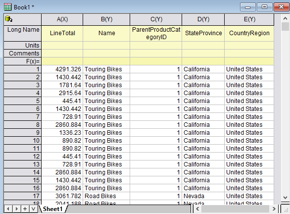
Daten filtern
- Origin hat eine Datenfilterfunktion, die der von Excel sehr ähnlich ist. Sie können diese Funktion verwenden, um spezifische Daten für die grafische Darstellung und Analyse zu verwenden, ohne den Rest der Daten zu entfernen.
- Wählen Sie die Spalten C (ParentProductCategoryID) und E (CountryRegion) und klicken Sie dann auf die Schaltfläche Datenfilter hinzufügen/entfernen auf der Symbolleiste Arbeitsblattdaten, um einen Filter für sie hinzuzufügen.
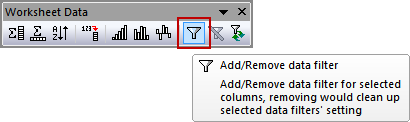
- Klicken Sie auf das Trichtersymbol in Spalte E. Deaktivieren Sie in der angezeigten Liste die Option United Kingdom und klicken Sie auf OK.
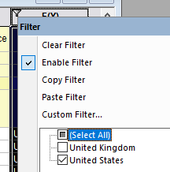
- Wenn eine Erinnerungsmeldung über die verborgenen Daten angezeigt wird, aktivieren Sie die Option Ja und klicken Sie auf OK.
- Klicken Sie auf das Trichtersymbol in Spalte C. Es zeigt numerische Filtermenüs wie Ist gleich, Kleiner als, ...., da die ParentProductCategoryID als Zahlen betrachtet werden.
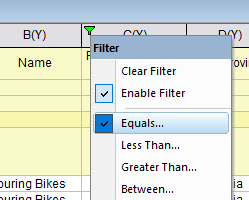
- Wählen Sie Ist gleich ... und geben Sie 1 als Wert ein. Klicken Sie auf OK.
- Jetzt zeigt das Arbeitsblatt nur die Verkäufe verschiedener Fahrräder in den USA.
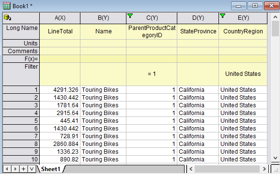
Pivot-Tabelle erstellen und Säulendiagramm zeichnen
- Wir können eine Pivot-Tabelle erstellen, um die Gesamtverkäufe der verschiedenen Fahrradtypen in verschiedenen Ländern zu sehen.
- Wählen Sie ohne Auswahl im Arbeitsblatt Restrukturieren > Pivot-Tabelle.
- Im aufgerufenen Dialog setzen Sie den Neuberechnungsmodus auf Auto. Dadurch wird die Bearbeitung der Pivot-Tabelle aktualisiert, wenn die Daten vom SQL-Editor neu importiert werden.
- Legen Sie für die Zeilenquelle Name fest.
- Legen Sie für die Spaltenquelle StateProvince fest (die Spalte mit dem Filter).
- Um die Gesamtverkäufe anzuzeigen, setzen Sie die Option Zusammenfassen nach auf Summe und die angezeigte Option Datenquelle der Pivot-Tabelle auf LineTotal.
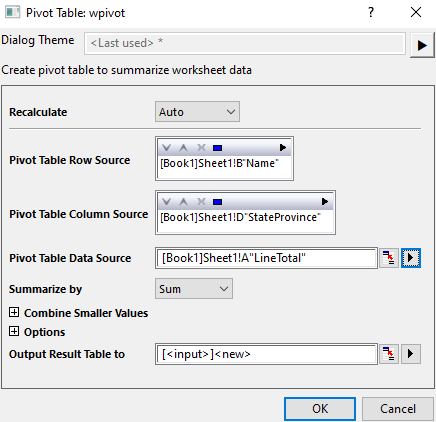
- Klicken Sie auf OK. Ein neues Arbeitsblatt mit dem Namen Pivot1 wird erstellt. Geben Sie ihm den Namen Zusammenfassung.
- Markieren Sie jetzt die Daten der Pivot-Tabelle und klicken Sie auf die Schaltfläche Säulendiagramm, um ein Säulendiagramm zu erstellen.
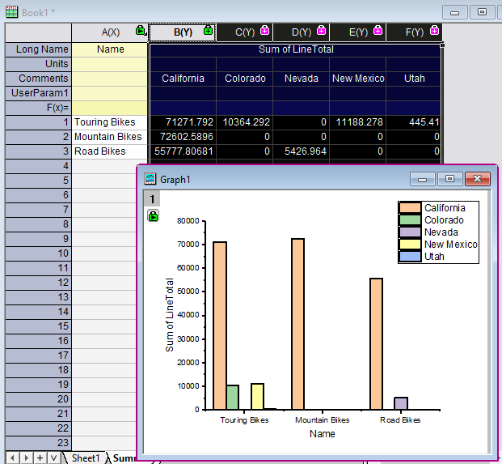
Diagramm benutzerdefiniert anpassen und Analysevorlage erstellen
Die Verkäufe in Kalifornien sind viel höher als die in anderen Bundesstaaten, wodurch die Spalten mit den Verkäufen in Utah schwer zu sehen ist. Wir können außerdem die Farbe und das Muster der Säulen/Balken benutzerdefiniert anpassen, um sie ansprechender zu gestalten.
- Klicken Sie einmal auf eine beliebige Säule von Kalifornien. Gehen Sie auf der aufgerufenen Minisymbolleiste zur Registerkarte Einzeln und klicken Sie auf "Auf rechter Y zeichnen", so dass die Säulen für Kalifornien gegen die rechte Y-Achse gezeichnet werden.
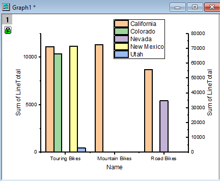
- Klicken Sie doppelt auf den Titel der rechten Y-Achse und legen Sie ihn mit %(1Y, @LC) fest. Das bedeutet, dass die Kommentarinfos der Zeichnung des ersten Y als Achsentitel verwendet werden. Der Titel der rechten Y-Achse wird California (Kalifornien).
- Klicken Sie doppelt auf den Titel der linken Y-Achse und ändern Sie ihn in Others (Andere).
- Klicken Sie doppelt auf eine der Y-Achsen, um den Dialog Achsen zu öffnen.
- Wählen Sie Links und Rechts im linken Bedienfeld. Setzen Sie auf der Registerkarte Skalierung die Auswahlliste Neuskalieren auf Festgelegt von - Auto bis.
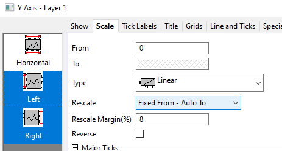
- Wählen Sie Horizontal im linken Bedienfeld. Setzen Sie auf der Registerkarte Skalierung die Auswahlliste Neuskalieren auf Auto.
- Gehen Sie zur Registerkarte Beschriftung der Hilfsstriche, wählen Sie Links und Rechts im linken Bedienfeld und setzen Sie Anzeige auf Technisch: 1K. Klicken Sie auf OK.
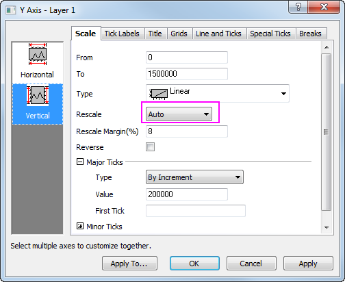
- Passen Sie die Füllfarben und die Muster der Säulen, die Legende, die horizontalen Hilfstrichssbeschriftungen etc. benutzerdefiniert an. Beispielsweise:
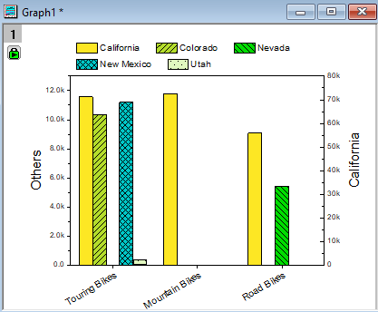
Diagramm in Arbeitsblatt einfügen und Analysevorlage speichern
- Klicken Sie mit der rechten Maustaste auf den Blattreiter Summary (Zusammenfassung) und wählen Sie Diagramm als Blatt hinzufügen: [Graph1], um das Diagramm als ein separates Blatt zur Arbeitsmappe hinzuzufügen.
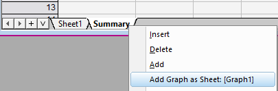
- Wenn Sie das Diagramm weiter benutzerdefiniert anpassen müssen, klicken Sie doppelt darauf, um das unabhängige Diagrammfenster wieder aufzurufen. Nehmen Sie die Anpassungen vor. Klicken Sie dann auf die Schaltfläche Zurück im Diagrammfenstertitel, um es wieder im Arbeitsblatt einzufügen.
- Jetzt ist die Arbeitsmappe alleinstehend und enthält alles: Datenbankverbindung, Datenfilterung, Analyse (Pivot-Tabelle) und Diagramm.
- Wählen Sie Datei: Arbeitsmappe als Analysevorlage speichern und geben Sie ihr den Namen LineTotal_By_State (Gesamtverkäufe_nach_Bundesstaat).
Abfrage ändern und Daten neu importieren, um Analyse automatisch zu aktualisieren
- Wählen Sie im Menü Datei: Zuletzt verwendete Mappen, um die Analysevorlage LineTotal_by_State, die Sie soeben gespeichert haben, zu laden. Eine leere Analysevorlagenmappe wird geöffnet.
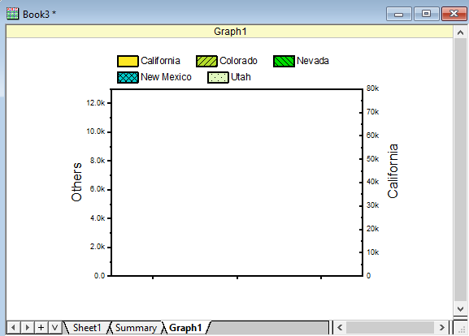
- Gehen Sie zu Sheet1. Klicken Sie auf
 und dann auf Import oder klicken Sie auf die Schaltfläche Daten importieren
und dann auf Import oder klicken Sie auf die Schaltfläche Daten importieren  , um aus der Datenbank neu zu importieren.
, um aus der Datenbank neu zu importieren.
- Das Blatt Summary und das Blatt Graph1 werden ebenfalls beide aktualisiert.
-
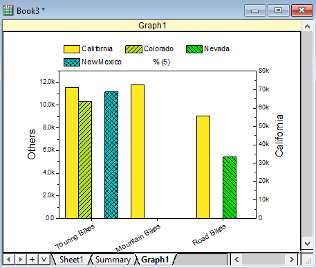
- Klicken Sie in der neuen Arbeitsmappe auf den Trichter in Spalte C und ändern Sie nur die Aktivierung von 2.
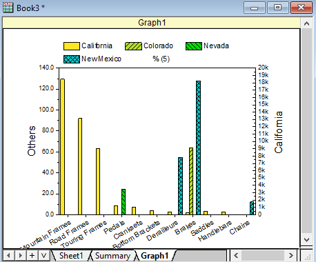
- Sie können auch auf klicken und den SQL-Editor, um die Abfrage zu modifizieren.
 |
- Sie müssen den Filter eventuell manuell erneut anwenden
 , nachdem Sie neue Daten aus der Datenbank importiert haben, oder Sie wählen Arbeitsblatt: Worksheet Skript... im Menü. Aktivieren Sie das Kontrollkästchen Nach Import und geben Sie das Skript wks.runfilter() ein. Dadurch werden nach jedem Import neuer Daten alle Filter automatisch angewendet. , nachdem Sie neue Daten aus der Datenbank importiert haben, oder Sie wählen Arbeitsblatt: Worksheet Skript... im Menü. Aktivieren Sie das Kontrollkästchen Nach Import und geben Sie das Skript wks.runfilter() ein. Dadurch werden nach jedem Import neuer Daten alle Filter automatisch angewendet.
- Wenn Sie die Projektdatei (OPJU) speichern, werden die importierten Datenbankdaten ausgeschlossen, so dass die Dateigröße des OPJU nicht zu riesig wird. Sie können aber auf klicken und die Option Importierte Daten beim Speichern ausschließen deaktivieren so dass die Daten in der OPJU-Datei verbleiben.
- Oder Sie lassen Importierte Daten beim Speichern ausschließen aktiviert, klicken stattdessen auf und aktivieren den Automatischen Import, so dass bei jedem erneuten Öffnen der OPJU-Datei die Datenbankdaten automatisch importiert werden.
|